所有錯題
彙整離散筆記中明確標記的錯題，保留題目圖片、原有解析與補充公式，依原筆記分類。
| 來源 | 收錄內容 | 圖片 |
|---|---|---|
| L01 | 作業 1：第 4、9 題與補集技巧 | 3 |
| L02 | 英文看不懂的第 8 題 | 2 |
| L03 | 歸納法、∑、反例、消去律、Bézout 與 GCD 證明 | 9 |
| L04 | Ex 4.5、Ex 5.1、Ex 5.2 的作業錯題 | 5 |
| 第一次小考複習 | 補充：composition 的切點數與加數數量 | 0 |
L01｜作業 1 錯題
來源：L01.md
4

4-b-3 另解
技巧
如果說至少，可以嘗試用補集
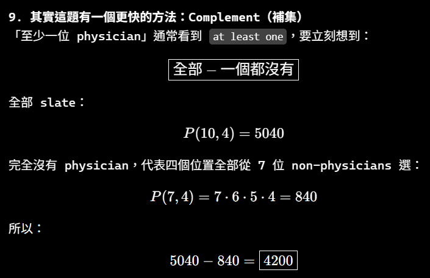
9
Danger
題目的 tea 部分是：
tea (plain, with cream, with sugar, with cream and sugar, with lemon, or with lemon and sugar)
中文就是：
茶有以下六種選擇：
plain：原味茶／什麼都不加
with cream：加 cream
with sugar：加糖
with cream and sugar：加 cream 和糖
with lemon：加檸檬
with lemon and sugar：加檸檬和糖
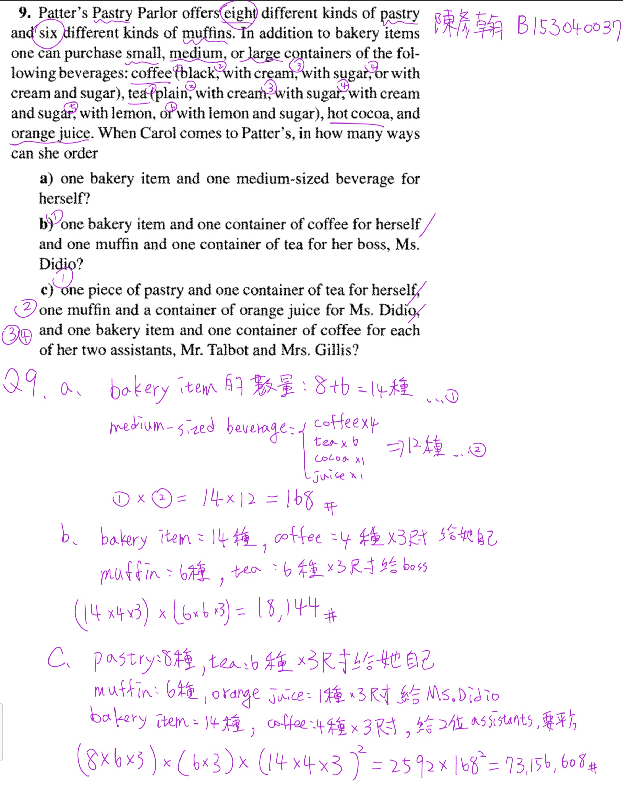
L02｜錯題
來源：L02.md
Danger | 英文看不懂的第 8 題
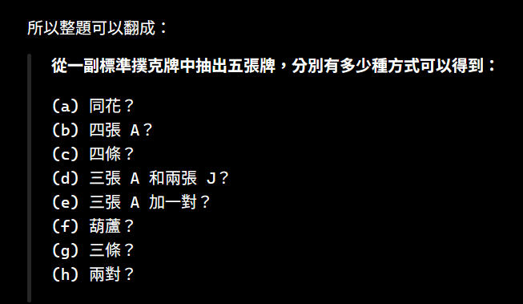
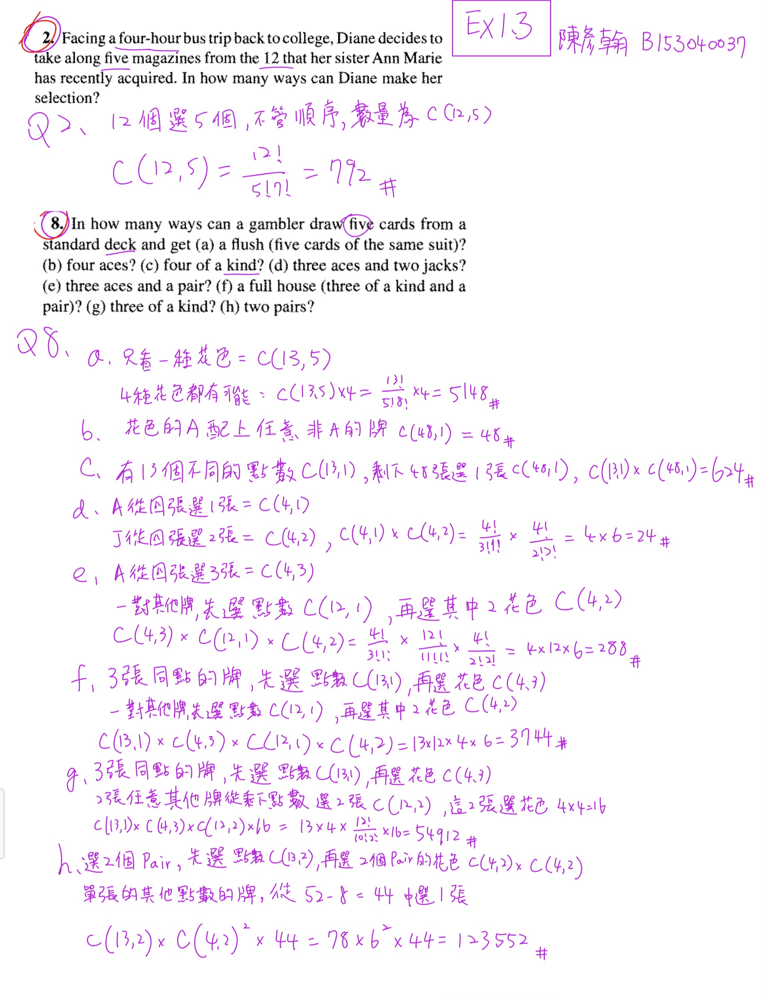
L03｜作業錯題
來源：L03.md
數學歸納法證明
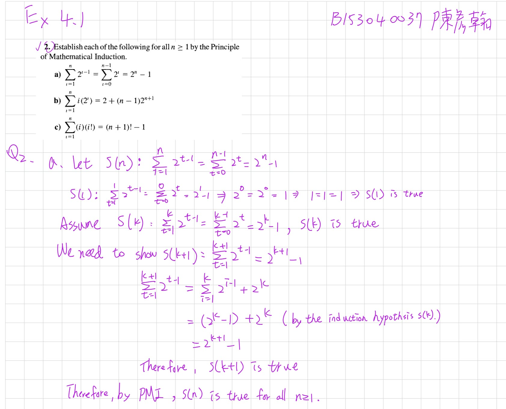
數學歸納法證明模板
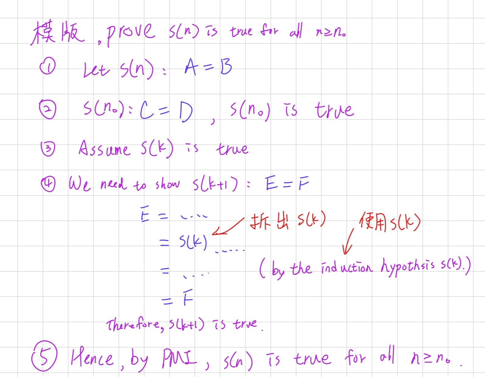
常用的 sigma
⭐sigma
公式
\[
\sum_{k=1}^{n} k = \frac{n(n+1)}{2}
\]
\[
\sum_{k=1}^{n} k^2 = \frac{n(n+1)(2n+1)}{6}
\]
\[
\sum_{k=1}^{n} k^3 = \left[\frac{n(n+1)}{2}\right]^2
\]
\[
\sum_{k=1}^{n} k(k+1) = \frac{n(n+1)(n+2)}{3}
\]
∑ 的性質
-
常數和：
\[ \sum_{k=1}^{n} c = nc \quad (c \text{ 表示任一常數}) \] -
係數可以提出：
\[ \sum_{k=1}^{n} c \cdot a_k = c \cdot \sum_{k=1}^{n} a_k \]其中 \(c\) 是與 \(k\) 無關的常數。
-
∑ 的後面有加減可以拆：
\[ \sum_{k=1}^{n}(a_k \pm b_k) = \sum_{k=1}^{n}a_k \pm \sum_{k=1}^{n}b_k \] -
∑ 的後面很多相乘：
先乘開，再利用加減可以拆的性質。例如：
\[ \sum_{k=1}^{n}(2k-1)(3k+1) \]先乘開：
\[ (2k-1)(3k+1) = 6k^2-k-1 \]
所以：
\[ \sum_{k=1}^{n}(2k-1)(3k+1) = \sum_{k=1}^{n}(6k^2-k-1) \]再拆成：
\[ 6\sum_{k=1}^{n}k^2 - \sum_{k=1}^{n}k - \sum_{k=1}^{n}1 \] -
相乘不能直接拆成兩個 ∑ 相乘：
一般來說，
\[ \sum_{k=1}^{n}(a_kb_k) \neq \left(\sum_{k=1}^{n}a_k\right) \left(\sum_{k=1}^{n}b_k\right) \]原因是右邊乘開後會多出交叉項。
例如：
\[ a_1b_1+a_2b_2 \neq (a_1+a_2)(b_1+b_2) \]
因為：
\[ (a_1+a_2)(b_1+b_2) = a_1b_1+a_1b_2+a_2b_1+a_2b_2 \]
所以遇到相乘時，通常要先把括號乘開，再利用性質 2、3 拆 ∑。
-
平方不能直接移到 ∑ 外面：
一般來說，
\[ \sum_{k=1}^{n}a_k^2 \neq \left(\sum_{k=1}^{n}a_k\right)^2 \]原因是右邊平方後會多出交叉項。
例如：
\[ a_1^2+a_2^2 \neq (a_1+a_2)^2 \]
因為：
\[ (a_1+a_2)^2 = a_1^2+2a_1a_2+a_2^2 \]
所以要記：
\[ \boxed{ \sum a_k^2 \neq \left(\sum a_k\right)^2 } \]∑ 裡面的平方要留在每一項上，不能直接把平方搬到整個 ∑ 外面。
證明不成立只要一個反例即可
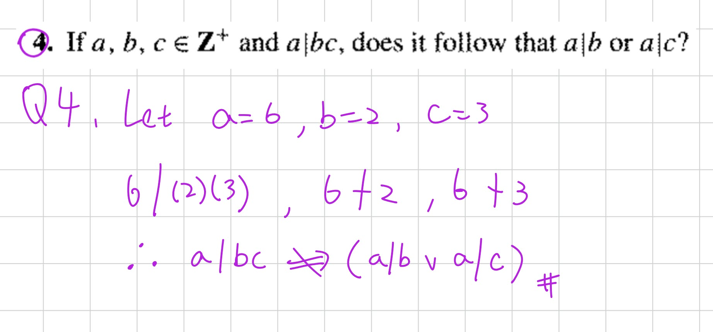
Danger | Zero-Product Property(零乘積性質)
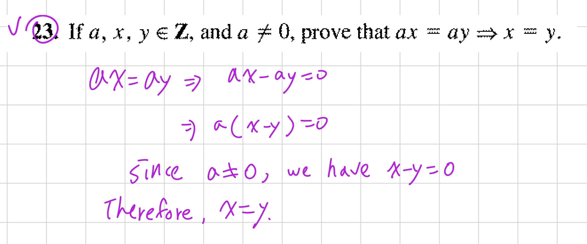
⭐Cancellation Law(消去律) — 為什麼可以把 \(a\) 消掉？
主線位置：使用者提供的第 63 題截圖；Teacher Transcript／Session=03／對應行號本輪尚未核對。
1. 題目在問什麼？
題目：
\[ a,x,y\in\mathbb Z,\qquad a\neq0 \]
Prove that
\[ ax=ay\Rightarrow x=y. \]
翻譯：
假設 \(a,x,y\) 都是整數，而且 \(a\neq0\)。
證明：如果 \(ax=ay\)，那麼 \(x=y\)。
這題不是要算出 \(x,y\) 是多少，而是要證明這個規則對所有符合條件的整數都成立。
2. 要怎麼證明？
你可能直覺會想：
\[ ax=ay\Rightarrow x=y \]
直接把兩邊的 \(a\) 約掉。
但這題就是要你證明「為什麼可以約掉」，所以我們把中間的理由寫出來。
Step 1：把所有項移到左邊。
\[ ax=ay \]
\[ ax-ay=0 \]
Step 2：提出共同因數 \(a\)。
\[ a(x-y)=0 \]
Step 3：使用 Zero-Product Property(零乘積性質)。
兩個整數相乘等於零，至少有一個必須是零。
因此：
\[
a=0\quad\text{or}\quad x-y=0
\]
但題目已經告訴我們：
\[ a\neq0 \]
所以只剩：
\[ x-y=0 \]
得到：
\[
\boxed{x=y}
\]
證明完成。
3. 作業可以這樣寫（英文簡短完整版）
Proof. Assume \(ax=ay\), where \(a\neq0\).
Then
\[ ax-ay=0 \]\[ a(x-y)=0. \]Since \(a\neq0\), we have \(x-y=0\).
Therefore, \(x=y\).
這個寫法已經包含關鍵理由與完整推導，適合用在證明題。
注意：這是依整數性質寫出的證明；目前尚未核對到《課本詳解.pdf》本題對應的原文寫法。
4. Exam Quick Sheet(考試速記／最短骨架)
\[
\boxed{ ax=ay \Rightarrow a(x-y)=0 \xRightarrow{a\neq0}x-y=0 \Rightarrow x=y }
\]
最重要的陷阱：\(a\neq0\) 不能省略。
5. Practice Tasks(練習任務)
5.1 Task 1
[Generated: 觀念確認]
Give a counterexample showing that the conclusion \(x=y\) may fail when \(a=0\).
請自己選擇整數 \(a,x,y\)，讓 \(ax=ay\) 成立，但是 \(x\neq y\)。
用中文、英文或列式回答都可以。
Danger | Ex 4.4 第 4 題：Bézout's Identity(貝祖等式)
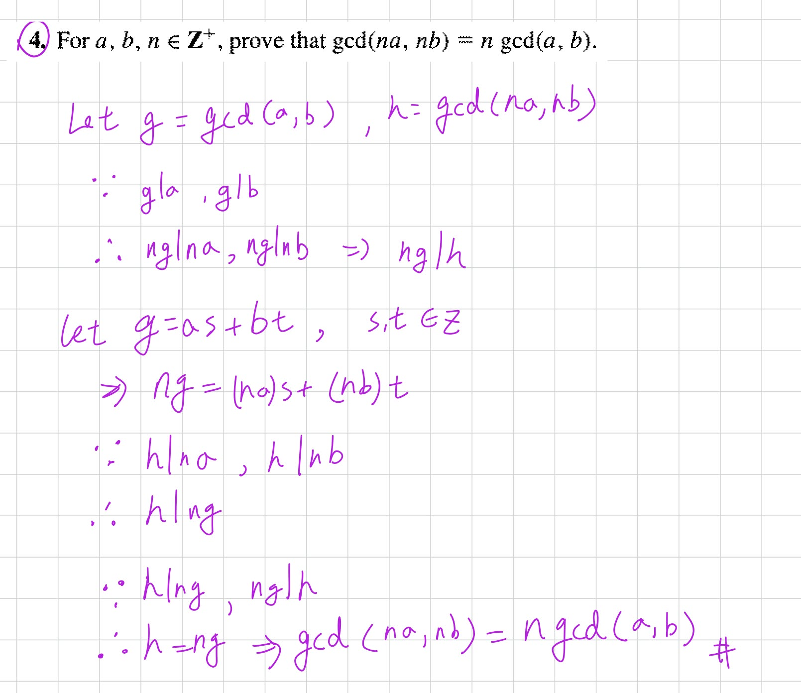
⭐Bézout's Identity(貝祖等式) — 為什麼最大公因數可以寫成兩個數的線性組合？
主線位置：Teacher Transcript／逐字稿_03.txt／Session=03／L531–L535、L619–L635。
對齊參考：《課本詳解.pdf》§4.4 第 4 題，PDF 第 119 頁。
先告訴你一個重點：
這題真正難的地方不是計算，而是理解：為什麼一個 GCD(最大公因數)可以用兩個數字的加減乘法表示，以及這件事怎麼幫我們證明整除。
我們先完全不碰作業題，從簡單例子開始。
1. 先複習 GCD(最大公因數)
假設有兩個整數：
\[ a=18,\qquad b=30 \]
它們的公因數有：
\[ 1,2,3,6 \]
其中最大的就是 \(6\)。
因此：
\[
\boxed{\gcd(18,30)=6}
\]
這部分你應該比較熟悉。
現在我換個問題：
你能不能只用 18 和 30，經過整數倍的加減，組合出 6？
可以！
\[ 18(2)+30(-1)=36-30=6 \]
也就是：
\[
\boxed{6=18(2)+30(-1)}
\]
這就是 Bézout's Identity 背後的想法。
2. Bézout's Identity 到底在說什麼？
對正整數 \(a,b\)，設
\[ g=\gcd(a,b). \]
Bézout's Identity 告訴我們：
一定存在兩個整數 \(s,t\)，使得
\[
\boxed{g=as+bt}
\]
這裡每個符號的意思是：
| 符號 | 意思 |
|---|---|
| \(a,b\) | 原本的兩個正整數 |
| \(g\) | \(a,b\) 的最大公因數 |
| \(s,t\) | 某兩個整數，可以是正數、0 或負數 |
| \(as+bt\) | Linear Combination(線性組合) |
重點是「存在某組 \(s,t\)」，不是隨便選 \(s,t\) 都會得到 GCD。
以前面的例子來看：
\[ \gcd(18,30)=6 \]
我們找到：
\[ 6=18(2)+30(-1) \]
因此：
\[ s=2,\qquad t=-1. \]
貝祖等式最重要的一句話
最大公因數可以表示成原本兩個整數的 Linear Combination(線性組合)：
\[ \gcd(a,b)=as+bt \]
其中 \(s,t\in\mathbb Z\)。
老師在逐字稿裡也特別強調：「最大公因數可以被原本兩個數的線性組合表示」，而且線性組合不一定唯一。
逐字稿_03.txt
3. 那 \(s,t\) 是怎麼知道的？要自己猜嗎？
不用猜。可以透過 Euclidean Algorithm(歐幾里得演算法)和 Back-Substitution(回代法)找出來。
我們用剛剛的 \(18,30\) 示範。
Step 1：反覆做除法。
\[ 30=18(1)+12 \]
\[ 18=12(1)+6 \]
\[ 12=6(2)+0 \]
最後一個非零餘數是 \(6\)，所以：
\[ \gcd(18,30)=6 \]
Step 2：從 6 開始往回代。
由第二行：
\[ 18=12+6 \]
移項得到：
\[ 6=18-12 \]
但是第一行告訴我們：
\[ 12=30-18 \]
把它代回去：
\[
\begin{aligned} 6&=18-12\\\ &=18-(30-18)\\\ &=18-30+18\\\ &=2(18)-30 \end{aligned}
\]
所以：
\[
\boxed{6=18(2)+30(-1)}
\]
我們就找到：
\[ s=2,\quad t=-1. \]
這就是貝祖等式的實際求法。
你之前算 \(252\) 和 \(105\) 的最大公因數，最後寫成 \(21=252(8)+105(-19)\)，也是同一種方法。
4. 貝祖等式為什麼可以拿來證明「整除」？
這一點非常重要，因為等等的作業會用到。
假設有一個整數 \(d\)，它同時整除 \(a,b\)。
也就是：
\[ d\mid a,\qquad d\mid b. \]
這代表存在整數 \(p,q\)，使得：
\[ a=dp,\qquad b=dq. \]
現在看任意線性組合：
\[ as+bt \]
代入：
\[
\begin{aligned} as+bt &=(dp)s+(dq)t\\\ &=d(ps+qt) \end{aligned}
\]
因為 \(ps+qt\) 是整數，所以：
\[
\boxed{d\mid(as+bt)}
\]
也就是：
如果 \(d\) 同時整除兩個數，那它也一定整除這兩個數的任何整數線性組合。
而貝祖等式告訴我們：
\[ g=as+bt \]
因此可以推出：
\[ d\mid g. \]
換句話說：
任何公因數，都整除最大公因數。
這正是老師講解 GCD 定理時使用的性質。
逐字稿_03.txt
⭐Ex 4.4 第 4 題 — 如何利用貝祖等式證明 GCD 的性質？
主線位置：Teacher Transcript／逐字稿_03.txt／Session=03／GCD 與線性組合定理，L529–L535；本題為 §4.4 作業練習。
對齊參考：《課本詳解.pdf》§4.4 第 4 題，PDF 第 119 頁。
課本詳解.pdf
1. 先理解題目要證明什麼
已知：
\[ a,b,n\in\mathbb Z^+ \]
要證明：
\[
\boxed{\gcd(na,nb)=n\gcd(a,b)}
\]
用中文講就是：
如果把兩個正整數都乘上相同的正整數 \(n\)，它們的最大公因數也會跟著乘上 \(n\)。
例如：
\[ \gcd(6,10)=2 \]
把兩個數都乘以 \(3\)：
\[ \gcd(18,30)=6 \]
而：
\[ 6=3(2) \]
符合：
\[ \gcd(3\cdot6,3\cdot10)=3\gcd(6,10). \]
但這個例子只能驗證一組數字，我們要證明所有正整數 \(a,b,n\) 都成立。
2. 第一步：為什麼要設定 \(g,h\)？
我們設：
\[
\boxed{g=\gcd(a,b)}
\]
\[
\boxed{h=\gcd(na,nb)}
\]
現在題目就變成：
\[
\boxed{\text{證明 }h=ng}
\]
是不是比一整串 GCD 符號容易看了？
接下來要利用整除性質證明：
\[ ng\mid h \]
以及：
\[ h\mid ng. \]
兩個正整數彼此整除，就一定相等。
3. 第二步：先證明 \(ng\mid h\)
由於：
\[ g=\gcd(a,b) \]
因此：
\[ g\mid a,\qquad g\mid b. \]
也就是說，存在整數 \(p,q\)，使得：
\[ a=gp,\qquad b=gq. \]
兩邊都乘上 \(n\)：
\[ na=(ng)p \]
\[ nb=(ng)q \]
所以：
\[ ng\mid na,\qquad ng\mid nb. \]
這說明 \(ng\) 是 \(na,nb\) 的公因數。
但我們已經設定：
\[ h=\gcd(na,nb) \]
根據剛剛講過的 GCD 性質：
任何公因數都會整除最大公因數。
所以：
\[
\boxed{ng\mid h}
\]
第一個方向完成。
4. 第三步：利用 Bézout's Identity 證明 \(h\mid ng\)
這是整題最關鍵的一步。
因為：
\[ g=\gcd(a,b) \]
由 Bézout's Identity，存在整數 \(s,t\)，使得：
\[
\boxed{g=as+bt}
\]
現在把兩邊乘以 \(n\)：
\[ ng=n(as+bt) \]
利用分配律：
\[
\boxed{ng=(na)s+(nb)t}
\]
注意！這個式子非常重要。
我們成功把 \(ng\) 寫成 \(na,nb\) 的整數線性組合。
回想：
\[ h=\gcd(na,nb). \]
所以：
\[ h\mid na,\qquad h\mid nb. \]
而我們剛剛已經證明：
一個整數若整除兩個數，就會整除它們的整數線性組合。
因此：
\[ h\mid\big((na)s+(nb)t\big). \]
又因為：
\[ ng=(na)s+(nb)t, \]
所以：
\[
\boxed{h\mid ng}.
\]
第二個方向也完成了。
5. 第四步：將兩個結果合起來
我們得到了：
\[
\boxed{ng\mid h}
\]
以及：
\[
\boxed{h\mid ng}.
\]
這表示 \(ng,h\) 兩個正整數彼此整除。
因此：
\[ h=ng. \]
將 \(g,h\) 換回原本的 GCD：
\[
\boxed{\gcd(na,nb)=n\gcd(a,b)}.
\]
證明完成。
6. 作業正式寫法（精簡英文版）
這是依課本詳解的技巧整理出的版本，不是逐字照抄。等你理解上面的原因後，作業可以寫這份。
Proof.
Let \(g=\gcd(a,b)\) and \(h=\gcd(na,nb)\).
Since \(g\mid a\) and \(g\mid b\), we have
\[ ng\mid na,\qquad ng\mid nb. \]
Thus, \(ng\mid h\).
By Bézout's Identity, there exist \(s,t\in\mathbb Z\) such that
\[ g=as+bt. \]
Hence,
\[ ng=(na)s+(nb)t. \]
Since \(h\mid na\) and \(h\mid nb\), we have \(h\mid ng\).
Since \(ng,h\in\mathbb Z^+\) and they divide each other, \(h=ng\).
Therefore,
\[
\boxed{\gcd(na,nb)=n\gcd(a,b).}
\]
7. Exam Quick Sheet(考試速記／最短骨架)
Bézout's Identity
\[ \gcd(a,b)=as+bt,\quad s,t\in\mathbb Z. \]
GCD 證明模板
\[
\begin{aligned} g&=\gcd(a,b)\\\ h&=\gcd(na,nb) \end{aligned}
\]
\[
\underbrace{ng\mid h}_{\text{公因數性質}} \qquad \underbrace{h\mid ng}_{\text{貝祖等式}}
\]
\[
\boxed{h=ng}
\]
8. Practice Tasks(練習任務)
先確認你真的理解這兩個最重要的動作，不用急著重寫完整作業。
8.1 Task 1 — Bézout's Identity
[Generated: Learning Practice]
Given \(\gcd(12,20)=4\), find integers \(s,t\) such that
\[ 4=12s+20t. \]
你可以直接列出 \(s,t\)，也可以寫出計算過程。
8.2 Task 2 — 理解證明方向
[Generated: Learning Practice]
Let
\[ g=\gcd(a,b),\qquad h=\gcd(na,nb). \]
Suppose
\[ g=as+bt,\qquad s,t\in\mathbb Z. \]
Complete the following argument:
\[ ng=(na)s+(nb)t. \]
Since \(h\mid na\) and \(h\mid nb\),
\[
h\mid\ \underline{\qquad\qquad}
\]
請填入空格，並用一句中文說明原因。
你先回答這兩題，我再確認你是否理解貝祖等式的用法。
gcd 之證明
把兩個分別設為 g 和 h，最後用 g|h、h|g 得到 g = h 得證。
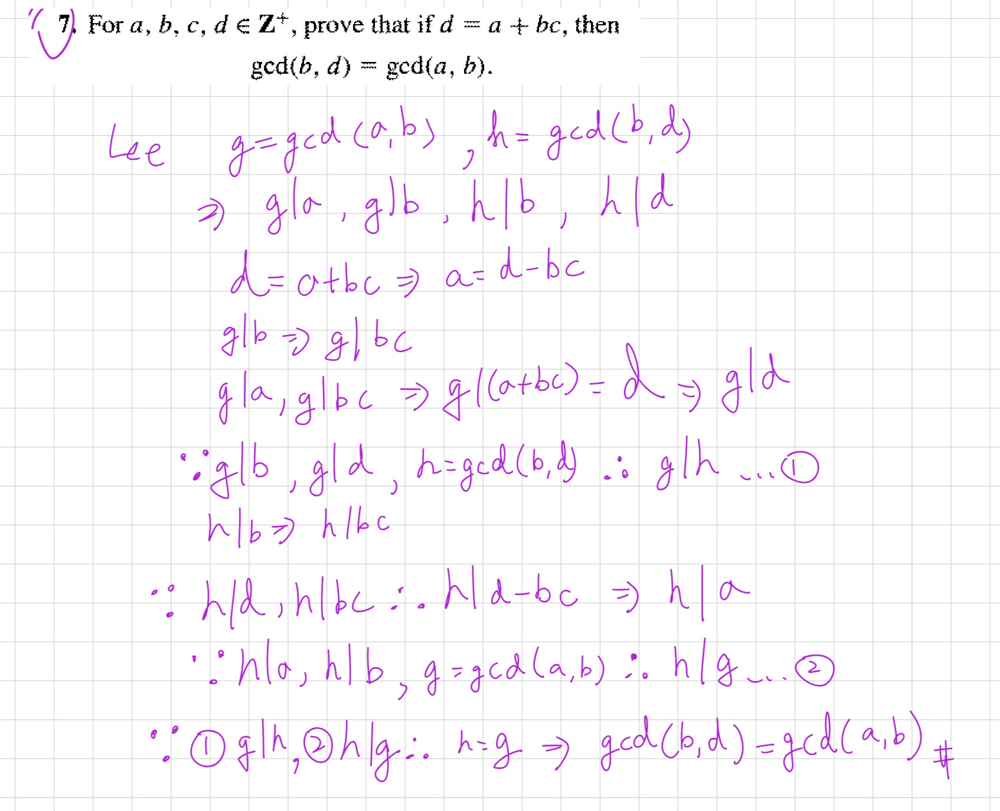
證明答案為 a 或 b
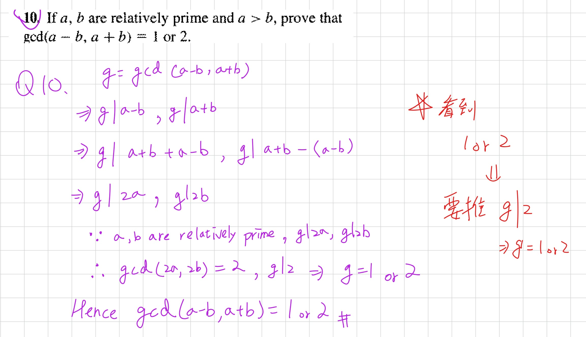
true 和 false 的 數學歸納法
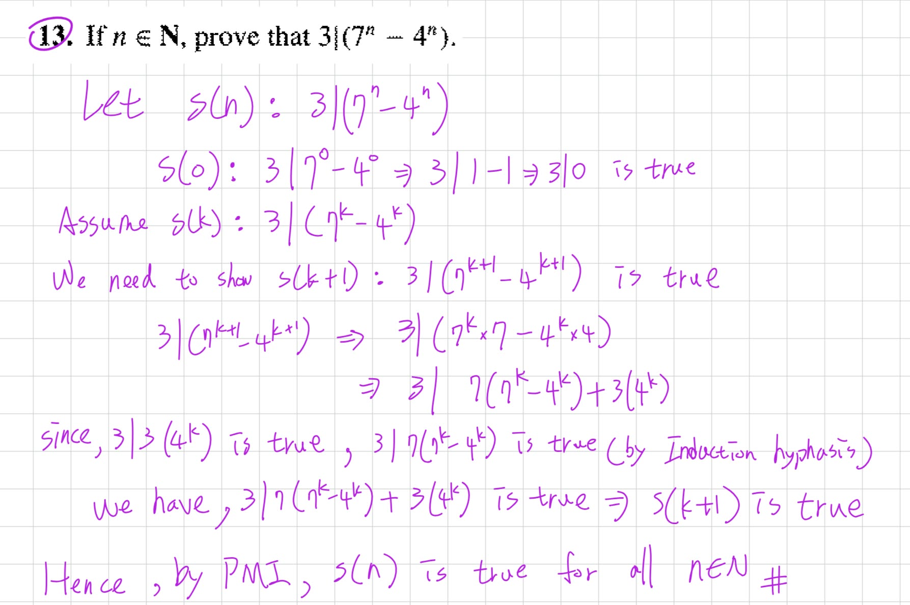
L04｜作業錯題
來源：L04.md
Ex 4.5
4
注意，要證明的是 A => B
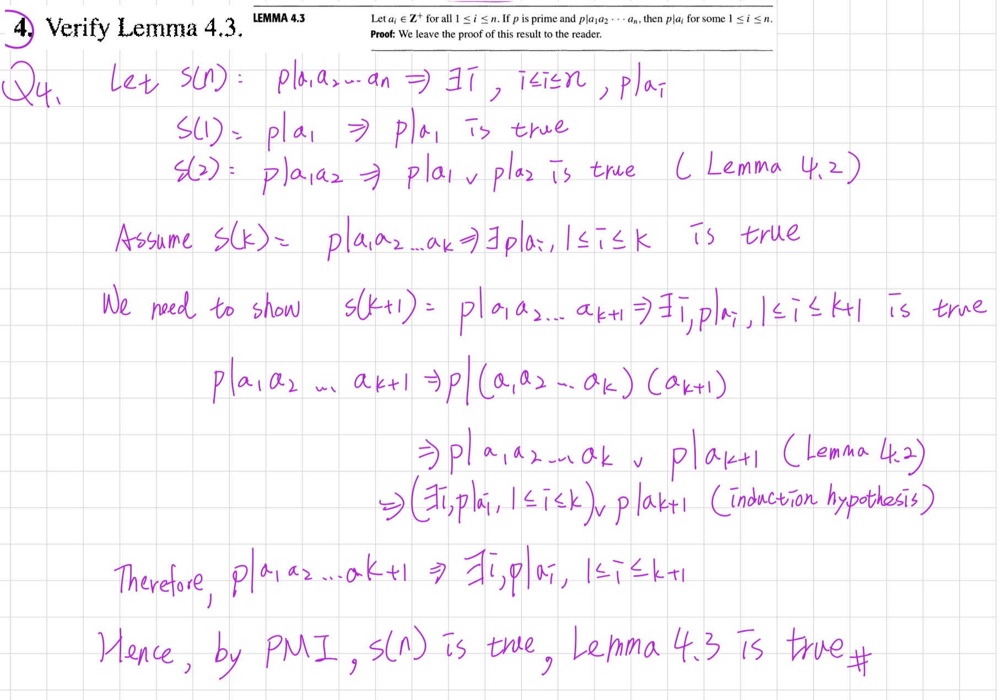
21
有點麻煩的題目
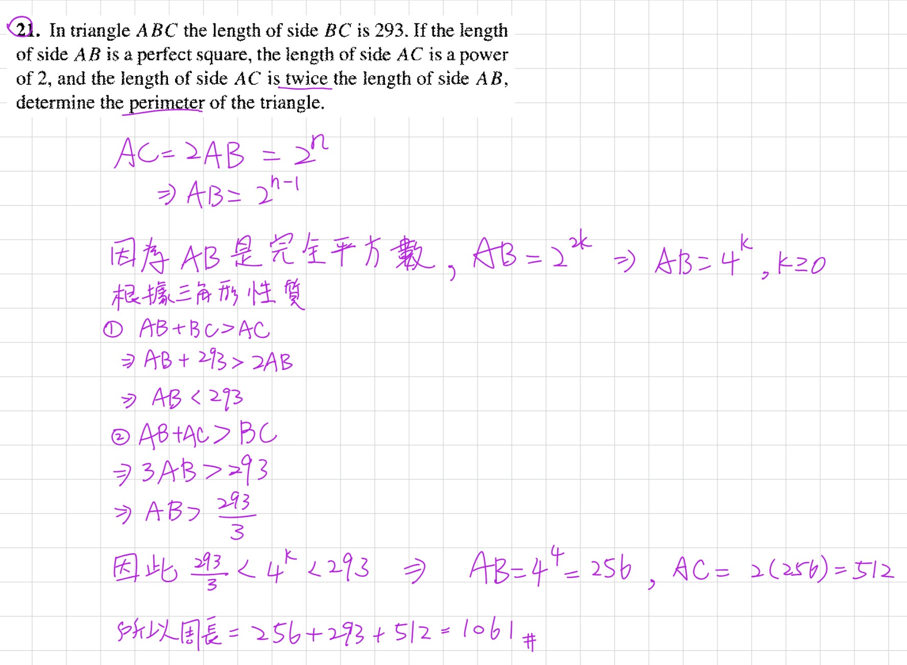
27
超級麻煩的題目！！！
符號
在數論（Number Theory）中：
\[
\boxed{\sigma(N)=\text{Sum of all positive divisors of }N}
\]
意思是：整數 \(N\) 的所有正因數之和。
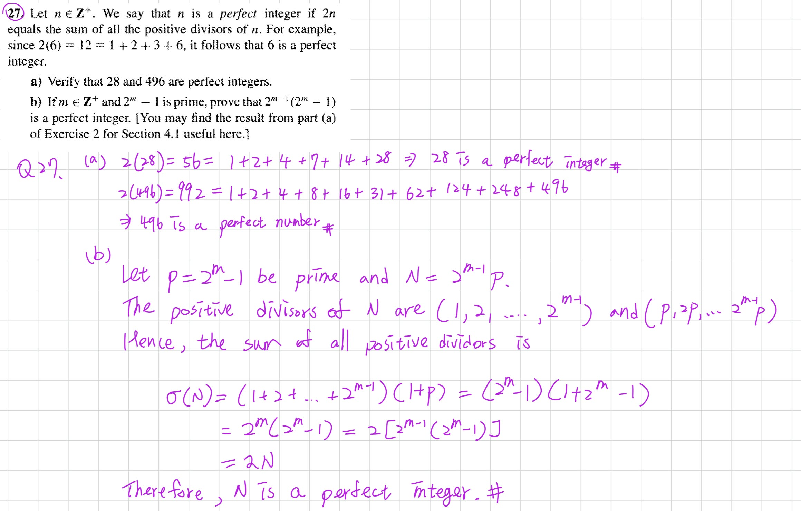
Ex 5.1
要反向證明
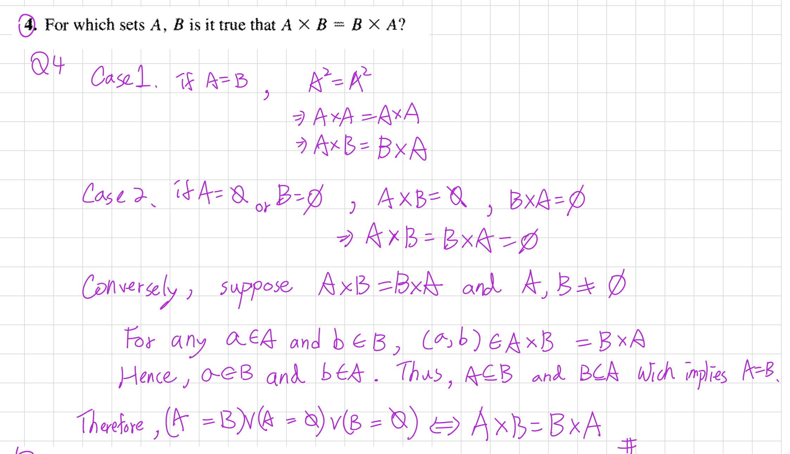
Ex 5.2
不應該寫 \(f(a)\ne1/0\)，因為 \(1/0\) 本身是未定義的，不能直接拿它作數值比較。
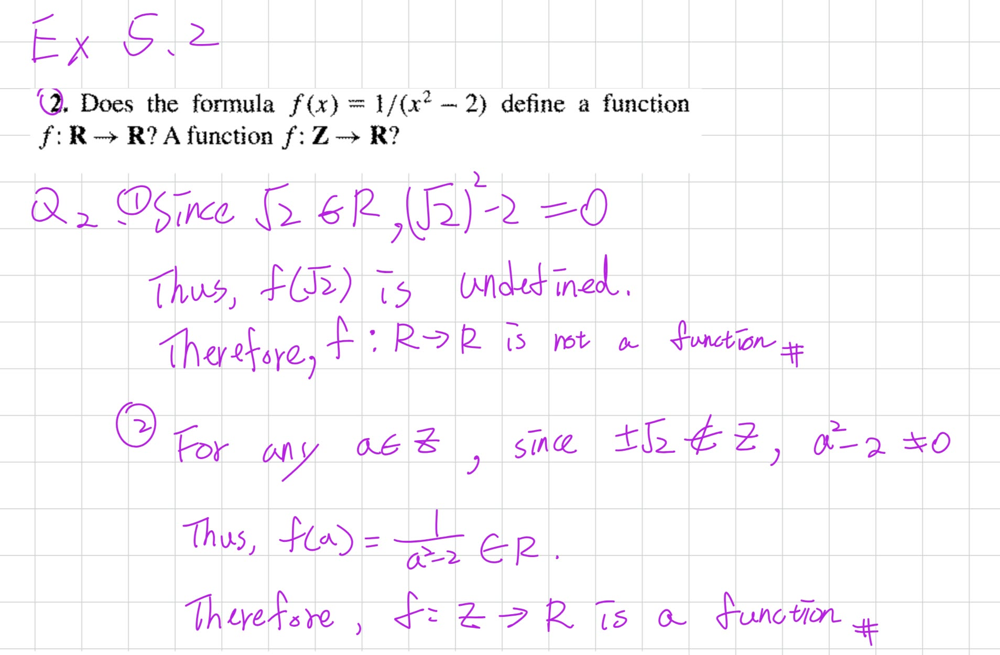
補充錯題｜Composition 的切點數與加數數量
來源：第一次小考複習 §5.6；同題列於該筆記的「個人錯題快速回想表」。
把正整數 \(N\) 寫成若干正整數加數的和，且順序重要，稱為 composition。Summand（加數）就是相加的每一項；\(2+1+3\) 的 summands 是 2、1、3。\(3+1\) 與 \(1+3\) 是不同 composition。
| 要數什麼 | 公式與條件 |
|---|---|
| \(N\) 的所有 compositions | \(\boxed{2^{N-1}}\)，\(N\ge1\) |
| 恰有 \(k\) 個正整數加數 | \(\boxed{\binom{N-1}{k-1}}\)，\(1\le k\le N\) |
| 每個加數都是正整數 \(d\) 的倍數 | \(d\mid N\) 時為 \(\boxed{2^{N/d-1}}\)；否則 0 |
| 每個加數都是 \(d\) 的倍數，且恰有 \(k\) 項 | \(d\mid N\) 且 \(N/d\ge k\) 時為 \(\binom{N/d-1}{k-1}\) |
原理：把 \(N\) 看成一列 \(N\) 個 1，有 \(N-1\) 個空隙。每隙選切／不切，共 \(2^{N-1}\) 種；恰好 \(k\) 段就選 \(k-1\) 個切點。若每項為 \(d\) 的倍數，每項除以 \(d\)，便與 \(N/d\) 的 compositions 一一對應。
個人筆記校正：8 拆成恰好 3 個正整數，是 \(\boxed{\binom72=21}\)；\(\binom73=35\) 對應恰好 4 個正整數。不要把「加號數／切點數」當成「加數數量」。7 拆成 3 個正整數則有 \(\binom62=15\)。
Ex1.4 #25–26：20 的每個 summand 都是偶數，除以 2 後是 10 的 composition，得 \(2^9=512\)；若每項是 4 的倍數，得 \(2^4=16\)。一般 \(N=md\) 時，答案 \(2^{m-1}\)。
Partition（整數分割）不計加數順序，所以 \(3+1\) 與 \(1+3\) 相同；不能用 \(2^{N-1}\)。例如 4 的 compositions 有 8 種，而 partitions 只有 \(4,3+1,2+2,2+1+1,1+1+1+1\) 這 5 種。